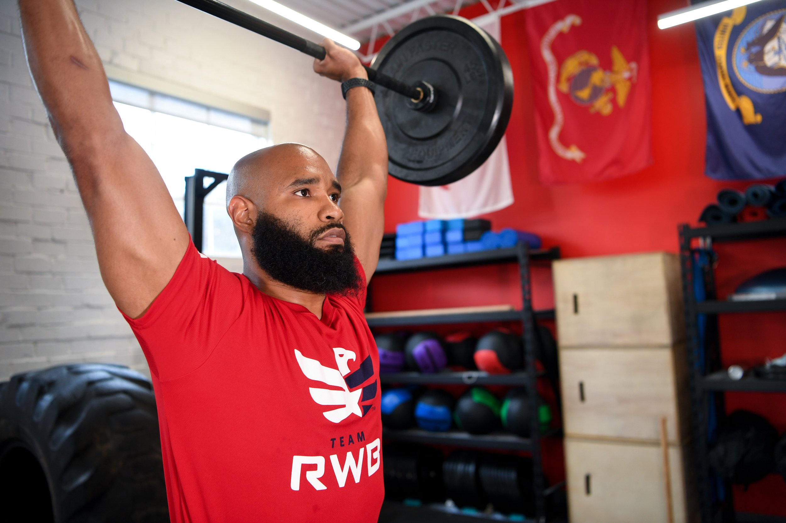
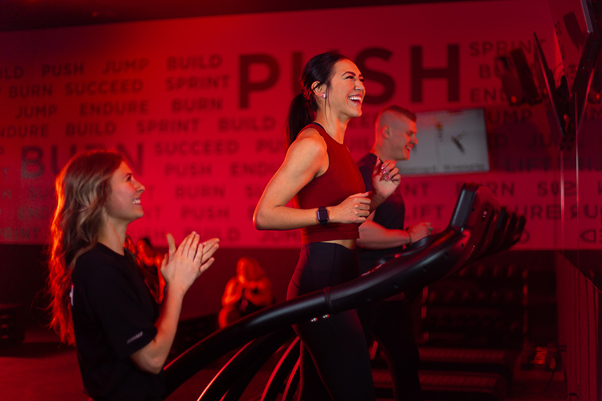
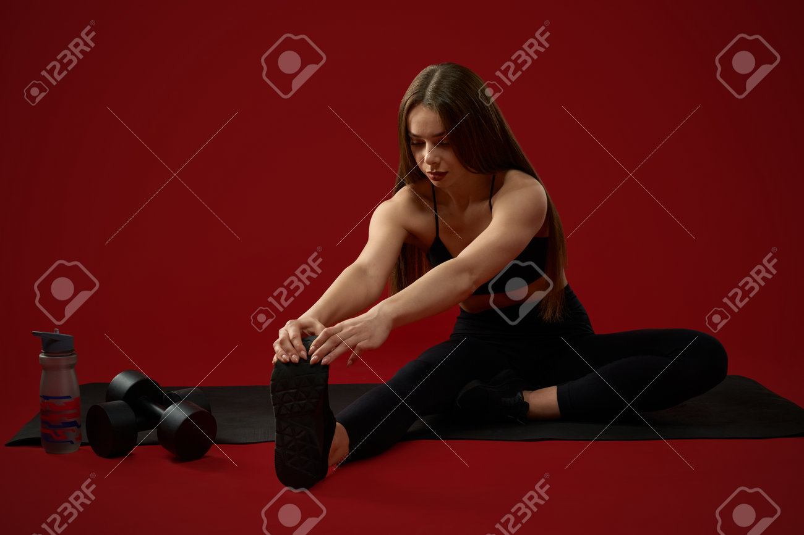
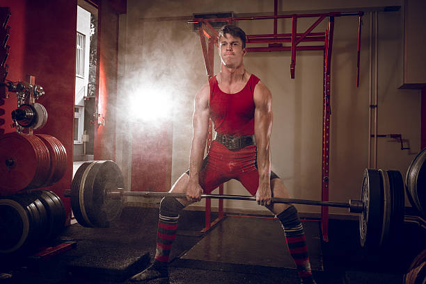

Nutrition for Your Workout Programs
Proper nutrition is essential for maximizing your fitness results. Here are dietary guidelines and meal suggestions tailored for various workout programs:
1. Strength Training Programs
Macronutrient Distribution: 40% Carbs, 30% Protein, 30% Fat
Allowed Foods:
- Lean meats (chicken, turkey, fish)
- Whole grains (brown rice, quinoa, oats)
- Fruits and vegetables
- Nuts and seeds
- Dairy products (Greek yogurt, cottage cheese)
Exercise Recommendations:
Exercises: Squats, Deadlifts, Bench Press
Reps/Sets: 3-4 sets of 8-12 reps
2. Hypertrophy Training
Macronutrient Distribution: 50% Carbs, 30% Protein, 20% Fat
Allowed Foods:
- Whole grain pasta and bread
- Lean protein sources (fish, lean beef, chicken)
- Fruits (bananas, berries) and vegetables
- Healthy fats (avocado, olive oil)
- Protein shakes or bars
Exercise Recommendations:
Exercises: Dumbbell Flyes, Leg Press, Shoulder Press
Reps/Sets: 3-5 sets of 6-10 reps
3. Cardio Workouts
Macronutrient Distribution: 60% Carbs, 20% Protein, 20% Fat
Allowed Foods:
- Fruits (apples, oranges, berries)
- Whole grains (brown rice, quinoa)
- Low-fat dairy products
- Lean protein (chicken, turkey)
- Nuts and seeds (in moderation)
Exercise Recommendations:
Exercises: Running, Cycling, Jump Rope
Duration: 30-60 minutes per session
4. Flexibility Training
Macronutrient Distribution: 50% Carbs, 30% Protein, 20% Fat
Allowed Foods:
- Fruits and vegetables
- Whole grains (brown rice, quinoa)
- Lean proteins (tofu, chicken)
- Healthy fats (nuts, seeds)
- Low-fat dairy
Exercise Recommendations:
Exercises: Yoga, Pilates, Stretching
Duration: 20-30 minutes per session
5. Endurance Training
Macronutrient Distribution: 65% Carbs, 20% Protein, 15% Fat
Allowed Foods:
- Complex carbohydrates (oats, brown rice)
- Fruits (bananas, oranges) and vegetables
- Lean proteins (fish, chicken)
- Healthy snacks (granola bars)
- Low-fat yogurt
Exercise Recommendations:
Exercises: Long-Distance Running, Swimming, Cycling
Duration: 60-120 minutes per session
6. Power Training
Macronutrient Distribution: 40% Carbs, 40% Protein, 20% Fat
Allowed Foods:
- Protein-rich foods (beef, fish, chicken)
- Complex carbs (sweet potatoes, brown rice)
- Vegetables and fruits
- Nuts and seeds
- Low-fat dairy products
Exercise Recommendations:
Exercises: Olympic Lifts, Medicine Ball Slams, Sprints
Reps/Sets: 3-5 sets of 1-5 reps
7. Functional Training
Macronutrient Distribution: 50% Carbs, 30% Protein, 20% Fat

Allowed Foods:
- Whole grains (brown rice, quinoa)
- Lean proteins (fish, chicken, legumes)
- Fruits and vegetables
- Nuts and healthy oils (olive oil)
- Low-fat dairy products
Exercise Recommendations:
Exercises: Kettlebell Swings, Bodyweight Exercises, Agility Drills
Reps/Sets: 3-4 sets of 8-15 reps